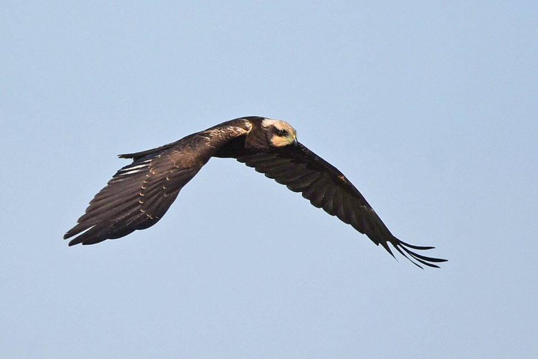

दलदल बाजWestern Marsh Harrier
Circus aeruginosus · Accipitridae · BRD-0047

- Scientific name
- Circus aeruginosus (Linnaeus, 1758)
- Family
- Accipitridae
- Hindi
- दलदल बाज
- Status here
- native
- IUCN
- LC
When to look कब देखें
Expected mainly in October, November, December, January, February, March.
दलदल बाज / Western Marsh Harrier
Circus aeruginosus (Linnaeus, 1758) — Accipitridae
दलदल बाज (वेस्टर्न मार्श हैरियर) — पूर्वी उत्तर प्रदेश के दलदली क्षेत्रों, जलाशयों, नरकटों (reedbeds) और धान के खेतों के ऊपर पाया जाने वाला एक बड़ा, लंबी पूंछ और लंबे पंखों वाला शिकारी पक्षी है। यह एक शीतकालीन प्रवासी (winter visitor) पक्षी है जो साइबेरिया और मध्य एशिया के ठंडे क्षेत्रों से यहाँ प्रवास करता है। इसकी शिकार करने की शैली बहुत ही अनोखी है; यह पानी या ज़मीन से कुछ ही फीट ऊपर अपने पंखों को हल्के 'V' आकार (shallow V) में फैलाकर धीरे-धीरे तैरते हुए उड़ता है (quartering flight) और अचानक नीचे झपटकर चूहों, मेंढकों और बीमार जलपक्षियों को पकड़ लेता है। वयस्क नर के पंख धूसर और शरीर कत्थई-लाल होता है, जबकि मादा और कम उम्र के पक्षी गहरे भूरे रंग के होते हैं जिनके सिर पर मलाईदार पीला (cream-coloured crown) धब्बा होता है। ये पक्षी रात के समय जलाशयों के किनारे नरकटों के बीच सामूहिक रूप से बसेरा (communal roosting) करते हैं।
Quick Identification त्वरित पहचान
| Feature | Description |
|---|---|
| Size | Large, heavy-bodied harrier (43–54 cm total length); wingspan around 115–130 cm |
| Flight Style | Quarters low over reedbeds/crops with slow wingbeats and long glides; wings held in a shallow 'V' |
| Male plumage | Tri-coloured upper wings (grey, black-tipped, brown); rufous abdomen; yellowish-cream cap |
| Female plumage | Almost entirely dark chocolate-brown with a contrasting cream-yellow crown, throat, and shoulder patch |
| Bare Parts | Large, staring yellow irises in adults; black hooked bill with a yellow cere; long yellow legs |
| Tail | Long and narrow; grey in males and dark brown in females, without distinct bars |
Field tip: Look for them gliding low over tall reeds or harvested paddy fields in winter. If you see a large raptor flying slowly just above the crop tops with its wings raised slightly in a V-shape, it is a Western Marsh Harrier. The female is larger than the male and is shown in the field tip.
Morphology आकारिकी
Biometrics (typical measurements in the northern Indian plains showing reverse sexual size dimorphism):
| Measurement | Range |
|---|---|
| Total length (Male) | 430–480 mm |
| Total length (Female) | 480–540 mm |
| Wing (Male) | 365–400 mm |
| Wing (Female) | 390–430 mm |
| Tail (Male) | 200–220 mm |
| Tail (Female) | 220–245 mm |
| Tarsus (Male) | 80–87 mm |
| Tarsus (Female) | 83–90 mm |
| Bill (Male) | 32–36 mm |
| Bill (Female) | 35–39 mm |
| Weight (Male) | 400–600 g |
| Weight (Female) | 550–800 g |
Plumage: Strongly dimorphic. Adult males have a pale yellowish-streaked head with a rufous-chestnut breast and abdomen. The back is dark brown. The tail and secondary flight feathers are silvery-grey, and the outer primary feathers are jet-black, forming a distinct tri-coloured wing pattern in flight. Females are dark chocolate-brown, with a highly contrasting cream or golden-buff crown, chin, throat, and leading edge of the shoulder. Juveniles resemble females but are darker and have less cream colouration on the head.
Bare parts: The hooked bill is dark slate-grey to black with a bright yellow cere. The eyes of adults are golden-yellow (dark brown in young females). The legs and tarsi are long, slender, and yellow, adapted for reaching into tall reeds to seize prey.
Vocalisations
Generally silent during their winter stay in Uttar Pradesh.
- Alarm call: A high-pitched, nasal squeal, kee-a or pee-up, repeated when disturbed at their communal roosts.
- Interaction call: A soft, whistling chatter, kwee-kwee-kwee, produced during intraspecific disputes over prey.
Behaviour & Ecology व्यवहार और पारिस्थितिकी
- Hunting style: Uses a low-quartering flight. It glides systematically back and forth just above the vegetation, using its keen hearing and sight to detect rustling. It drops suddenly into the reeds to pin prey with its long claws.
- Communal roosting: During the winter, they exhibit communal roosting behavior. Dozens of individuals gather at dusk to settle together in dense patches of tall reeds (Phragmites karka) or sugarcane fields, flying out individually at dawn.
- Prey stealing: They are frequently targeted by Black Kites and Crows, which try to steal their caught food.
Life Cycle / Phenology जीवन चक्र
- Breeding: Does not breed in Uttar Pradesh. They breed in temperate Europe, Siberia, and Central Asia from April to July.
- UP migration calendar: Arrives in Basti by late October or early November as wetlands dry down and paddy crops mature. They depart back to their northern breeding grounds in March.
- Nesting in breeding range: They build a large nest of reeds, sticks, and grass on the ground in dense reedbeds.
Host Plants or Prey आहार
Primary food items:
- Mammals: Primarily field rats, mice, and shrews in agricultural fields.
- Birds: Injured or feeding waterbirds (such as Common Moorhen Gallinula chloropus and Little Ringed Plover), chicks, and frogs.
- Amphibians & Fish: Grass frogs and dead fish in drying wetlands.
- Insects: Large beetles and grasshoppers.
Predators / Natural Enemies शत्रु
- Raptors: Large resident eagles (like Greater Spotted Eagles) may attack roosting harriers.
- Corvids: Groups of House Crows (Corvus splendens) mob harriers during the day to steal their food.
- Mammals: Jackals (Canis aureus) and feral dogs may attack harriers when they feed on the ground or roost in accessible marshes.
Agricultural / Human Relevance कृषि प्रासंगिकता
Rodent controller in wetlands. The Western Marsh Harrier is highly valued by local farmers as it actively hunts rodents in flooded paddy fields and marshy edges where terrestrial predators cannot reach.
Conservation and legal status: Protected under Schedule IV of the Wildlife Protection Act, 1972. Major threats in Basti include the loss of large wetlands, reclamation of marshes for construction, and the burning of sugarcane and reed beds which destroys their roosting habitats.
Expected Locally स्थानीय रूप से अपेक्षित
Not a field record. Written from published accounts for eastern Uttar Pradesh. No confirmed local sighting yet — if you have seen it, that is what the atlas needs.
अभी तक स्थानीय पुष्टि नहीं। यह विवरण प्रकाशित स्रोतों से है, किसी अवलोकन से नहीं।
A common winter migrant seen from November to February in the wetlands of Basti, such as the margins of the Rapti river and local lakes (taal). They can be observed in the late afternoons quartering low over harvested wheat and paddy stubble. They roost in large numbers in the tall reedbeds bordering riverine marshes.
Distribution वितरण
Global range: Breeds in Europe, North Africa, and across temperate Asia; migrates south to winter in the Mediterranean, sub-Saharan Africa, South Asia, and southern China.
In India: Widespread winter visitor to all plains, wetlands, and agricultural districts.
In Uttar Pradesh: A regular winter visitor to all major wetland complexes and river floodplains.
In Basti district / eastern UP: Observed throughout the winter months in open agricultural and marshy areas in all blocks.
Research Questions शोध प्रश्न
Anyone can investigate these | कोई भी इन प्रश्नों की जाँच कर सकता है
- How many Western Marsh Harriers gather at a single communal roost in Basti district? / बस्ती जिले में एक ही बसेरे (roost) पर कितने दलदल बाज सामूहिक रूप से इकट्ठा होते हैं? — Count individuals arriving at a known reedbed roost at sunset.
- What is the average height (in meters) at which a harrier quarters over paddy fields? — Estimate and record flight heights during systematic hunting sweeps.
- Does the abundance of hunting harriers change between flooded paddy fields and dry harvested fields? — Conduct point counts in different agricultural plots.
- How often do House Crows succeed in stealing prey from a hunting Western Marsh Harrier? / एक शिकारी दलदल बाज से कौवे कितनी बार उसका शिकार छीनने में सफल होते हैं? — Record and analyze kleptoparasitic interactions.
- What date is the first Western Marsh Harrier recorded in Basti each autumn? — Participate in citizen science tracking to document arrival dates over multiple years.
Similar Species मिलती-जुलती प्रजातियाँ
| Species | Key Difference | हिंदी |
|---|---|---|
| Pallid Harrier (Circus macrourus) | Much slimmer; narrower wings; male is pale grey-and-white; female has a distinct white collar and facial pattern | सफ़ेद बाज — पतला शरीर, साफ़ गर्दन का घेरा |
| Montagu's Harrier (Circus pygargus) | Slimmer; male has black wing bars and rufous streaks on underparts; female is very difficult to separate but is smaller and lighter | मॉन्टेगू बाज — पंखों पर काली धारियाँ, छोटा आकार |
| Black Kite (Milvus migrans) | Forked tail; darker plumage without cream crown; scavenger; does not glide low over reeds with wings in a V-shape | चील — दो-शाखी पूँछ, झुका हुआ सिर, मैला भूरा रंग |
Field rule: Large dark brown raptor with cream-coloured crown and throat (female) or tri-coloured grey wings (male) quartering slowly and low over reeds with wings in a shallow V is a Western Marsh Harrier.
Taxonomy & Classification वर्गीकरण
Original description. Carl Linnaeus described the Western Marsh Harrier as Falco aeruginosus in 1758 in his Systema Naturae (ed. 10, vol. 1, p. 91). The type locality was Europe (restricted to Sweden). The genus name Circus is derived from the Ancient Greek kirkos, meaning a circle or a kind of hawk that flies in circles. The specific name aeruginosus is Latin for rusty or copper-green, referring to the warm rufous tones of the bird's plumage.
Subspecies. Two subspecies are recognized. The subspecies visiting the Indian Subcontinent is:
| Subspecies | Authority | Range | Notes |
|---|---|---|---|
| C. a. aeruginosus | (Linnaeus, 1758) | Europe, Western and Central Asia; winters in Africa and South Asia | UP subspecies; nominate form; larger and darker than the eastern subspecies C. a. harterti |
Family and order placement. Placed in the order Accipitriformes, family Accipitridae, subfamily Circinae (harriers).
Phylogenetic notes. Circus aeruginosus is closely related to the Eastern Marsh Harrier (Circus spilonotus) and the African Marsh Harrier (Circus ranivorus), with which it forms a species complex.
IUCN status rationale. Assessed as Least Concern (LC). The global population is stable and extremely large, although local wetland loss impacts wintering densities in northern India.
Photo Gallery फोटो गैलरी
References संदर्भ
- Linnaeus, C. (1758). Systema Naturae. Tenth Edition. Holmiae, p. 91. [original description]
- Ali, S. & Ripley, S. D. (1999). Handbook of the Birds of India and Pakistan. Vol. 1. Oxford University Press, New Delhi.
- Grimmett, R., Inskipp, C. & Inskipp, T. (2011). Birds of the Indian Subcontinent. 2nd ed. Christopher Helm, London.
- Ferguson-Lees, J. & Christie, D. A. (2001). Raptors of the World. Christopher Helm, London.
- BirdLife International (2024). Circus aeruginosus. IUCN Red List of Threatened Species. Ver. 2024.
- GBIF Occurrence Data — Circus aeruginosus, Uttar Pradesh (2010–2025).
Source file: species/fauna/birds/western_marsh_harrier.md